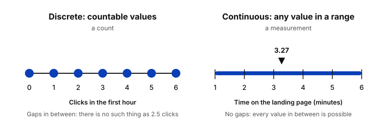
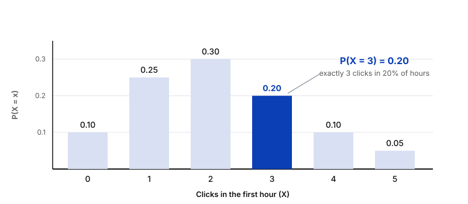
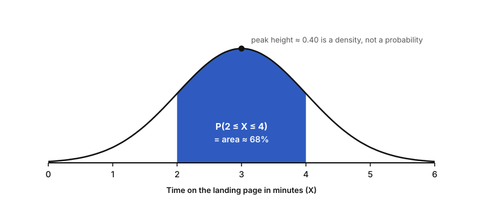
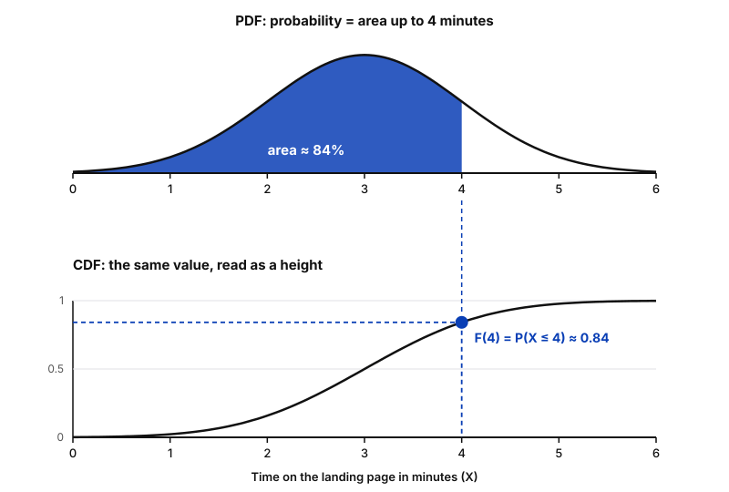
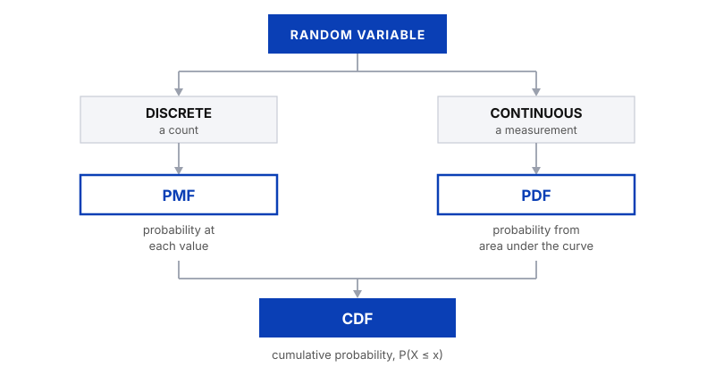
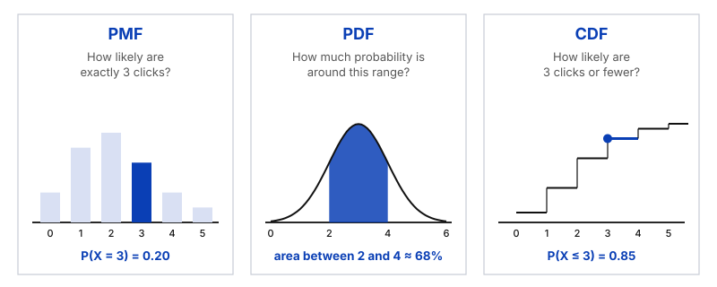
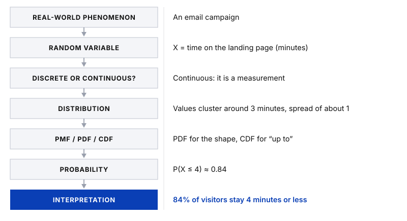

Probability
Random Variables & Probability Distributions
Data is full of uncertainty: how many customers will click a campaign email, or how long they will stay on the page afterwards. A random variable gives that uncertainty a number, and a probability distribution describes how likely each value is. This post builds the idea step by step, from random variables to PMF, PDF and CDF, with one running example: a marketing email campaign. It builds on Probability Basics and Conditional Probability & Independence. All numbers are illustrative.
Random variables
A random experiment is a process whose result we cannot predict with certainty, although we know which results are possible. Each possible result is an outcome. A random variable is a rule that turns each outcome into a number, so that we can calculate with it. By convention, a capital X is the variable itself, and a lowercase x is one specific value it can take.
Imagine you send an email campaign and watch the first hour. One possible outcome is "3 customers click the link". The random variable X = number of clicks in the first hour turns this outcome into X = 3. Before you send the email, you do not know what X will be, but you can know which values are possible (0, 1, 2 and so on) and how likely each one is. That description is exactly what a distribution gives you.
Random does not mean patternless
The value of a random variable is uncertain in any single run, but the pattern of how likely the values are can be studied. That pattern is what analysts work with.
Discrete vs continuous
The first question to ask about any random variable is whether you count it or measure it.
Discrete
A count
Separate values that you can list, with gaps in between. It is usually a whole number.
Example: clicks in the first hour
Continuous
A measurement
Any value in a range, limited only by how precisely you can measure.
Example: time on the landing page

Some examples from data analytics:
| Variable | Type | Why |
|---|---|---|
| Orders per day | Discrete | You count them |
| Clicks on a campaign email | Discrete | You count them |
| Support tickets per week | Discrete | You count them |
| Time on the landing page | Continuous | You measure it |
| Delivery time | Continuous | You measure it |
| Order value | Continuous (in practice) | Money is counted in cents, but with so many possible values it is treated as continuous |
Three ways to describe a distribution
Knowing that X is the number of clicks does not yet tell us how likely each value is. Are 0 clicks common? Is 10 clicks realistic? To answer that, we need to describe how probability is spread across the possible values. This description is the probability distribution, and we write it down with three functions:
- PMF (probability mass function). For discrete variables. It gives the probability of each exact value.
- PDF (probability density function). For continuous variables. Probability is the area under the curve over a range of values.
- CDF (cumulative distribution function). For both types. It gives the probability of a value up to a certain point.
Why do we need them? Because business questions are really probability questions: How likely is it that the campaign gets at least 4 clicks in the first hour? What share of visitors stay longer than 4 minutes? Each function is the right tool for a different kind of question, and which one you use depends on the type of variable and on what you want to know. The next sections go through them one by one.
PMF: probability mass function
For a discrete variable, the probability mass function (PMF) gives the probability of each exact value:
P(X = x)
It is read as "the probability that X equals x". Two rules always hold: every probability is between 0 and 1, and all probabilities add up to 1.
Say that, for your campaign, the number of clicks in the first hour has this PMF:
| Clicks (x) | 0 | 1 | 2 | 3 | 4 | 5 |
|---|---|---|---|---|---|---|
| P(X = x) | 0.10 | 0.25 | 0.30 | 0.20 | 0.10 | 0.05 |

How to read it: find the value on the horizontal axis and read the height of its bar. P(X = 3) = 0.20, so in about 20% of hours you would expect exactly 3 clicks. The tallest bar, 2 clicks at 0.30, is the most likely value. To get the probability of several values, add their bars: P(X ≥ 4) = 0.10 + 0.05 = 0.15.
PDF: probability density function
A continuous variable works differently. Time on the page could be 3 minutes, 3.1 minutes, 3.14159 minutes, and so on, with infinitely many possible values. If each exact value had a positive probability, the total would be far above 1. So for a continuous variable, the probability of one exact value is zero: P(X = exactly 3.000) = 0. Instead, we ask about ranges.
The probability density function (PDF) describes this. Two ideas are important:
- Density is not probability. The height of the curve shows how concentrated the values are around that point. It can even be greater than 1 for a very narrow distribution.
- Probability is area. The probability that X falls between two values is the area under the curve between them. The total area under the whole curve is 1.
Suppose time on the page is roughly bell-shaped, centred around 3 minutes with a spread of about 1 minute. The probability that a visitor stays between 2 and 4 minutes is the shaded area:

How to interpret it: where the curve is high, values are concentrated, and where it is low, they are rare. A wide, flat curve means more spread. To answer a question, choose a range and look at the area above it, never at the height at a single point.
CDF: cumulative distribution function
The cumulative distribution function (CDF) answers a different question: how likely is it that X is at most a certain value?
F(x) = P(X ≤ x)
It accumulates probability, starting from the left and adding up as x grows. This works for both types of variable:
- Discrete: add up the PMF bars. P(X ≤ 3) = 0.10 + 0.25 + 0.30 + 0.20 = 0.85. In 85% of hours you get 3 clicks or fewer.
- Continuous: take the area under the PDF to the left of x. P(X ≤ 4) ≈ 0.84, so about 84% of visitors stay 4 minutes or less.
How to read a CDF: pick a value on the horizontal axis and read the height of the curve. It always starts at 0, ends at 1 and never goes down. Steep parts are where a lot of probability sits, and flat parts are where few values occur. To get the probability of a range, subtract: P(2 < X ≤ 4) = F(4) − F(2) ≈ 0.84 − 0.16 = 0.68, which matches the shaded area from before.

This is the relationship between PDF and CDF: the CDF is the accumulated area under the PDF, and the PDF is the slope of the CDF. For a discrete variable, the CDF is a staircase built from the PMF bars.
PMF vs PDF vs CDF
Here is how everything fits together:

| Function | Used for | Answers | Probability comes from |
|---|---|---|---|
| PMF | Discrete | How likely is exactly this value? | The height of the bar, P(X = x) |
| Continuous | How much probability is around this range? | The area under the curve | |
| CDF | Both | How likely is this value or less? | The height of the curve, P(X ≤ x) |

How to think about a distribution
Instead of memorising a catalogue of distributions, ask five questions about any variable:
- What is the random variable? What exactly are we measuring? Example: time on the landing page, in minutes.
- Is it discrete or continuous? Count or measurement? Here it is a measurement, so continuous.
- How is probability distributed? Where are the values concentrated, how spread out are they, and is the distribution skewed? Most visitors may stay 2 to 4 minutes, while a few stay much longer, which would skew the real data to the right.
- What probability question am I asking? Exactly this value: PMF. Within a range: PDF, the area. Below a threshold: CDF.
- What does the probability tell me? Translate the result into something meaningful: "84% of visitors stay 4 minutes or less" can tell you whether the page content is too long or too short.
From data to distribution
A good way to remember all this is the analytical workflow. In real work you start at the top, with something you observe, not with a formula:

The distribution is the bridge between raw data and a statement that a stakeholder can act on.
In one sentence
A distribution is a way of describing uncertainty in a variable, not just a mathematical curve.
Key takeaway
A random variable turns the outcome of an experiment into a number. Discrete variables, which are counts, use a PMF, where probability is the height of a bar. Continuous variables, which are measurements, use a PDF, where probability is an area. The CDF accumulates probability up to a value for both. Always finish by translating the probability back into a plain statement about the business.